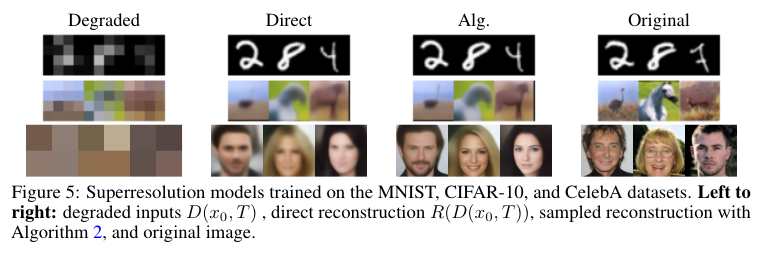

不止去噪！任意退化模式上的扩散模型
\[ \newcommand{\x}{\mathbf x} \newcommand{\E}{\mathbb E} \newcommand{\calN}{\mathcal N} \newcommand{\I}{\mathbf I} \newcommand{\coloneqq}{\mathrel{\mathrel{\vcenter{:}}=}} \]
Cold Diffusion
站在 machine learning researcher 的角度，DDPM 或 SMLD 的「加噪-去噪」过程有着非常严谨的数学描述，使得我们能够用 variational inference 或 score matching 等方法来解决问题，让 Diffusion Models 建立在了坚实的数学基石上。倘若站在 computer vision researcher 的角度，特别是做 low-level vision 的，我们很快能想到「加噪-去噪」其实只是图像的一种退化模式，而常见的其他退化模式（例如「模糊-去模糊」「降低分辨率-超分」「遮挡-填充」等）能否用来做类似的扩散过程呢？答案是肯定的，Cold Diffusion[1]一文就做了相关的探索。
Generalized Diffusion
由于任意退化模式不一定有像高斯噪声那样简洁方便的数学表达，我们难以从底层数学开始为每种退化做严谨推导，而更多的是做一种高层的、启发式的思考。
首先我们需要定义退化过程。对于 DDPM 而言，这便是前向加噪过程： \[ q(\x_t\vert \x_0)=\calN\left(\x_t;\ \sqrt{\bar\alpha_t}\x_0,(1-\bar\alpha_t)\I\right) \] 更一般地，我们定义退化算子 \(D\) 来表示任意一种退化： \[ \x_t=D(\x_0,t)\tag{1}\label{D} \] 退化可以是随机性的，比如 DDPM 就是随机噪声；也可以是确定性的，例如下采样、高斯模糊、甚至是事先确定好的噪声等。
值得注意的是，当扩散步数充分大时，DDPM 保证任何数据都能趋近于服从标准正态，这样我们在逆向生成时才知道要从标准正态中采样。同样地，我们定义的退化过程也需要让退化后的图像呈现出某种已知的分布（或方便建模的分布），以便从中采样。
有了退化算子，我们还需要一个重构算子，近似为 \(D\) 的逆运算。通常用一个神经网络为其建模，例如 DDPM 的： \[ \x_\theta(\x_t,t)\approx \x_0 \] 更一般地，定义重构算子 \(R\)，以 \(\theta\) 为参数： \[ R_\theta(\x_t,t)\approx \x_0 \tag{2}\label{R} \] 理想情况下，\(R\) 恰是 \(D\) 的逆，即 \(R_{\theta^\ast}(D(\x_0,t),t)=\x_0\) 或 \(D(R_{\theta^\ast}(\x_t,t),t)=\x_t\). 但由于退化算子会磨灭部分输入信息，这是无法做到的。
为了训练重构网络，DDPM 从 ELBO 出发，经过一系列推导和简化，最终得到损失函数为： \[ \E_{\x_0,\epsilon,t}\left[\Vert\x_\theta(\x_t,t)-\x_0\Vert^2_2\right] \] 对标这个结论，我们直接定义损失函数为： \[ \E_{\x_0,t}\left\|R_\theta(D(\x_0,t),t)-\x_0\right\|_1 \tag{3}\label{loss} \] 其中将 2 范数替换为 1 范数应该也只是经验性的举措，因为一般图像恢复任务都倾向于使用 1 范数。
最后，我们重点考虑逆向采样过程。在 DDPM 中，倘若给定 \(\x_0\)，我们知道： \[ \begin{align} &q(\x_{t-1}\vert\x_t,\x_0)=\calN(\x_{t-1};\ \mu_t(\x_t,\x_0),\tilde\beta_t\mathbf I)\\ \text{where}\quad&\mu_t(\x_t,\x_0)=\frac{\sqrt{\alpha_t}(1-\bar\alpha_{t-1})}{1-\bar\alpha_t}\x_t+\frac{\sqrt{\bar\alpha_{t-1}}\beta_t}{1-\bar\alpha_t}\x_0\\ &\tilde\beta_t=\frac{1-\bar\alpha_{t-1}}{1-\bar\alpha_t}\beta_t\\ \end{align} \] 但由于 \(\x_0\) 是未知的，我们用模型近似之： \[ \begin{align} &p_\theta(\x_{t-1}\vert\x_t)\coloneqq\calN\left(\x_{t-1};\ \mu_\theta(\x_t,t),\sigma_t^2\mathbf I\right)\approx\calN\left(\x_{t-1};\mu_t(\x_t,\x_0),\tilde\beta_t\mathbf I\right)=q(\x_{t-1}\vert \x_t,\x_0)\\ \text{where}\quad& \mu_\theta(\x_t,t)= \mu_t(\x_t,\x_\theta(\x_t,t))\approx \mu_t(\x_t,\x_0)\\ &\sigma_t^2=\tilde \beta_t\text{ or }\beta_t \end{align} \] 更一般地，我们现在也希望用 \(\x_t\) 和 \(R_\theta(\x_t,t)=\hat\x_0\approx\x_0\) 得到 \(\x_{t-1}\). 但是由于缺乏理论支撑，我们只能启发式地构造。作者给出了两种算法：
- Algorithm 1：直接对 \(\hat\x_0\) 做 \(t-1\) 步退化得到 \(\x_{t-1}\)；
- Algorithm 2：分别对 \(\hat\x_0\) 做 \(t-1\) 步和 \(t\) 步退化，通过二者的差分得到 \(\x_{t-1}\).
实验发现，Algorithm 1 只对噪声退化有较好的表现，而对模糊退化表现非常糟糕。其实这也在意料之中，因为当 \(t\) 很大时，重构误差也是很大的，那么得到的 \(\x_{t-1}\) 自然也不理想。但是为什么 Algorithm 2 能够有更好的表现呢？
考虑一个线性的退化：\(D(\x_0,t)=\x_0+t\cdot \mathbf e\)，应用 Algorithm 2： \[ \begin{align} \x_{t-1}&=\x_t-D(\hat\x_0,t)+D(\hat\x_0,t-1)\\ &=D(\x_0,t)-D(R_\theta(\x_t,t),t)+D(R_\theta(\x_t,t),t-1)\\ &=\x_0+t\cdot\mathbf e-R_\theta(\x_t,t)-t\cdot\mathbf e+R_\theta(\x_t,t)+(t-1)\cdot\mathbf e\\ &=\x_0+(t-1)\cdot\mathbf e\\ &=D(\x_0,t-1) \end{align} \] 我们惊讶地发现结果与 \(R_\theta\) 无关！所以无论重构误差有多大，在线性退化场景下，Algorithm 2 总能给出正确的值。而在 \(t\) 足够小的时候，根据泰勒展开，任意退化都可用线性退化近似：\(D(\x_0,t)=\x_0+t\cdot \mathbf e+o(t)\)，所以 Algorithm 2 能表现得比 Algorithm 1 更好。
疑问：上述分析只在 \(t\) 足够小时成立，但是我们知道 \(R_\theta(\x_t,t)\) 的近似误差在 \(t\) 越大时越大，怎么解释 Algorithm 2 在 \(t\) 较大时的表现呢？
现在我们已经描述出了一般的扩散过程，接下来我们尝试代入几个常见的退化模式。
Various Transformations
这一节中，我们将考虑几个具体的退化模式：「模糊-去模糊」「遮挡-填充」「下采样-超分」「雪花-去雪花」。值得注意的是，本节重点在于探索逆向过程能否恢复这些退化，即展示的结果是先做退化、再重构，而非直接生成。
Deblurring
作者用一个高斯核在原图上做卷积来完成高斯模糊。设高斯核序列为 \(\{G_t\}_{t=1}^T\)，则： \[ \x_t=G_t\ast \x_{t-1}=G_t\ast G_{t-1}\ast\cdots\ast G_1\ast\x_0=\bar G_t\ast\x_0=D(\x_0,t) \] 其中 \(\ast\) 表示卷积操作。我们按 \(\eqref{R}\) 式定义重构网络，并用 \(\eqref{loss}\) 式训练。采样时，依 Algorithm 2，每一步 \(\x_{t-1}\) 会在 \(\x_t\) 的基础上减去： \[ D(\hat\x_0,t)-D(\hat\x_0,t-1)=\bar G_t\ast\x_0-\bar G_{t-1}\ast\x_0 \] 由于高斯核可以视为滤波器，这个差值其实反映了 \(\x_{t-1}\) 和 \(\x_t\) 之间的频率差异。
作者在实验中对比了逆向过程逐层采样（Alg.）和一次性从 \(\x_T\) 恢复（Direct）。逐层采样能够生成更多的细节，FID 值更优，但 SSIM 更差。考虑到 SSIM 比较的是两张图片的相似度，且去模糊本身具有多样性，视觉上更好的（有更多细节的）SSIM 反而更差是完全可以接受的。
Inpainting
作者使用一个高斯掩膜将掩盖的部分置为灰色。具体而言，设有一个递增序列 \(\{\beta_t\}_{t=1}^T\)，以其中每一项为方差构建高斯分布，并将最大值（分布中心）归一化为 \(1\)，这样就得到了一系列掩膜 \(\{z_{\beta_t}\}_{t=1}^T\). 通过累乘各级掩膜，我们就能够让掩盖的信息逐渐增多，即： \[ \x_t=D(\x_0,t)=\x_0\cdot\prod_{i=1}^tz_{\beta_i} \] 定量结果与去模糊相似，逐层采样有着更优的 FID，直接恢复有更优的 SSIM.

Super-Resolution
对于超分而言，作者用下采样+最近邻上采样作为退化算子。
该任务的结果其实没有那么理想，可视化的图像看起来还算过得去，但是定量结果就有些不尽人意了。

Snowification
Snowification 似乎并不是一个常见的图像恢复任务，作者采用的是论文[2]的官方实现来做退化。
但是该任务的结果也不是很理想，仔细观察可以发现，逐层采样的重构图像有很严重的 artifacts.
Cold Generation
上一小节我们考察的是不同退化下模型重构原始图片的能力，而这一节我们主要关注无条件生成。后者要求我们必须能够对退化后的分布建模，否则无法知道该从哪里采样 \(\x_T\).
Deterministic Noise Degradation
所谓确定性噪声，其实就是事先采样好一个高斯噪声 \(z\sim\calN(\mathbf0,\mathbf I)\)，且在生成过程中不发生变化。模仿 DDPM，定义退化模式为： \[ D(\x_0,t)=\sqrt{\bar\alpha_t}\x_0+\sqrt{1-\bar\alpha_t}z \] 那么我们可以直接按照 Algorithm 2 采样。又或者，可以计算 \(z\) 的估计值来代替之： \[ \hat z(\x_t,t)=\frac{\sqrt{\bar\alpha_t}R_\theta(\x_t,t)}{\sqrt{1-\bar\alpha_t}} \] 作者称这其实对应了 DDIM 的采样过程。
Deblurring
模糊不仅是一个确定性退化，我们还能知道，当 \(T\) 足够大时，\(\x_T\) 所有像素的值都将等于各 channel 分别取平均的结果。所以我们可以用一个 3 维向量表达任意输入图像的退化结果。为了采样 \(\x_T\)，作者使用 GMM 对退化得到的 3 维向量建模。这时作者发现了一个问题——由于所有像素的值都相同、网络和变换都是确定性的，所以得到的结果缺乏多样性。作者的解决方案是先对 \(\x_T\) 的每个像素加上随机噪声，再拿去生成。
我的思考：个人觉得用类似 StyleGAN 中的 style modulation 更优雅一些。

Gaussian Mask (Inpainting)
当 \(T\) 足够大时，\(\x_T\) 的所有像素都会被遮挡完（一片黑），这时会产生一个和模糊一样的问题——采样将不具有任何多样性。作者的解决方案是让被遮盖区域变成一个随机颜色，而非黑色。如此，我们就可以从任意一种颜色开始生成了。
Animorphosis
如果我们再开一点脑洞，跳脱出「退化」的思维，Diffusion Models 到底做了一件什么事？把数据分布映射到了另一个分布。那这个另一个分布能不能是另一个数据集呢？当然可以！于是乎，作者展示了一个非常有意思的结果——把人脸转换成动物脸。具体而言，我们的“退化”过程就是人脸和动物脸的融合过程： \[ \x_t=D(\x_0,t)=\frac{T-t}{T}\x_0+\frac{t}{T}\mathbf y,\quad\mathbf y\sim \text{AFHQ Dataset} \]
如果说之前的退化设置分别对应去噪、去模糊、填充等图像恢复任务，那这个结果其实对应着图像分离任务。
一点思考：Cold Diffusion 将随机噪声退化扩展到了任意退化模式，不拘泥于数学推导，让人眼前一亮。我们自然会想，能否用它来做相应的图像恢复任务？私以为，虽然 Cold Diffusion 提供了这样的可能性，但它的结果还远远不够，要能做出 SOTA 水平，还需要在其上设计更多其他的东西。拿图像填充举例，Cold Diffusion 的退化模式比较单一，不能满足填充任务中各种形状、各种面积占比的 mask 设置（当然这一点稍微设计一下就能搞定）。总而言之，Cold Diffusion 提供了一个新颖的方向，沿其思路做图像恢复任务应该是一条可行的路线。
References
- Bansal, Arpit, Eitan Borgnia, Hong-Min Chu, Jie S. Li, Hamid Kazemi, Furong Huang, Micah Goldblum, Jonas Geiping, and Tom Goldstein. Cold diffusion: Inverting arbitrary image transforms without noise. arXiv preprint arXiv:2208.09392 (2022). ↩︎
- Hendrycks, Dan, and Thomas Dietterich. Benchmarking Neural Network Robustness to Common Corruptions and Perturbations. In International Conference on Learning Representations. 2018. ↩︎